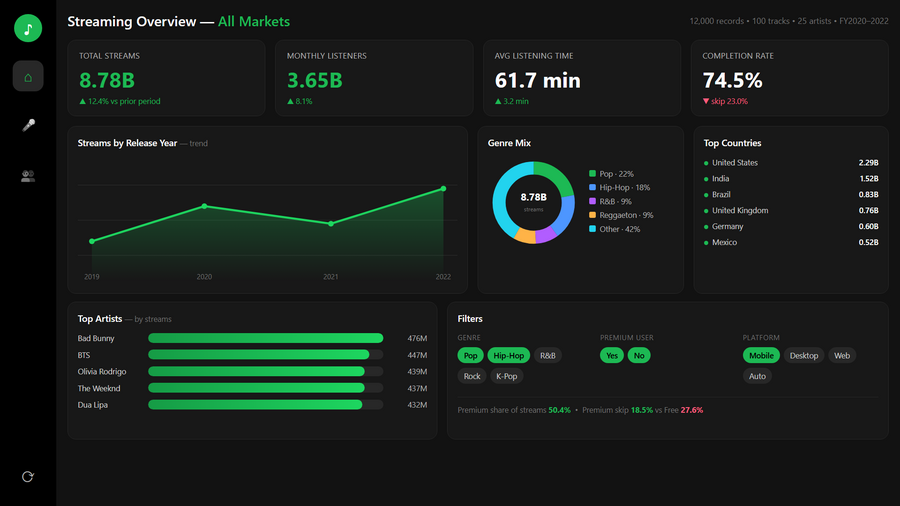

Spotify Analytics Dashboard
12,000 streaming records — what retains listeners, and where premium conversion hides.
Interactive
Details →
Data Analyst · Digital Marketing
Helping businesses turn data into smarter decisions — through analytics and digital strategy.
01 — About
Coming from a business background, conversations around growth, customers, marketing and finance were always part of everyday life. Those conversations made me curious — not about creating advertisements, but about understanding why businesses grow and how better decisions are made.
That curiosity led me to a BBA in Marketing Management, followed by a PGDM in Marketing & Finance. Internships and client work sharpened the marketing side, while analytics pulled me toward Power BI, SQL and Python — turning business data into insights people can actually act on.
02 — Skills
Analytics
Marketing
Tools
Professional
In plain English: a check like this shows whether Meta or Google is really earning its budget this week — before the money gets spent finding out the hard way.
03 — Experience
Internships and client work, judged the only way that matters — by what moved after I got involved.
Zero Dimensions — Digital Marketing & SEO
Owned on-page SEO and worked hand-in-hand with the off-page team so content ranked, not just shipped. Turned campaign data into weekly reports leadership could act on — engagement up 15%.
Provectus — Marketing Strategy
Grew an advisory firm's LinkedIn presence 30% in six months by reading which content converted and doubling down — B2B positioning driven by analysis, not guesswork.
Freelance — Client Campaigns
Handled clients end-to-end across Meta Ads, content and reporting. Used AI-assisted workflows to ship more ad variations faster, and tied every campaign back to its performance numbers.
05 — Brands I've worked with
06 — Achievements & Certificates
Business Competition Winner
Placed first in an inter-college business competition — strategy, financials and pitch.
Marketing Competition Winner
Won a marketing case competition — a campaign concept judged on insight and execution.
Final Year Project Leader
Led the final-year capstone team from research through to final delivery.
Certificates
SQL
Python
Google Analytics
Digital Marketing
Experience — Zero Dimensions
Experience — Provectus
07 — Notes
08 — Contact